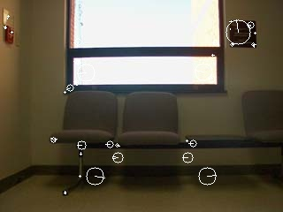
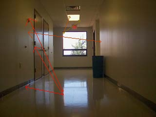

Assignment Report
I'm just going to point this out first, this project wasn't quite as hard as my grade suggests it is. It was a fun easy exercise, but getting things set-up was a complete nightmare, and I hope I never have to do anything like that again. Now that the disclaimer is out of the way, lets get to explaining the code.
So the first function (keypoints)is pretty easy; just find the keypoints and descriptors and return them. I decided to make it a little nicer so I added an optional display function to it, allowing us to turn on and off the "imshow", "imwrite", and "print" statements. I used a simple SIFT detector for a couple reasons, but it's mainly just because I didn't want to have to deal with some of the quirks of the other detector types, for instance "threshold". I originally planned to make an extra parameter to allow users to select their own detector type but ,as you can probably tell, I'm running out of time as it is. Either way, I think I did a pretty good job on this one; it's pretty similar to the professor's example, but I did enjoy adding the extra little tweaks to it.
Next, we have the matching() function. Conceptually, this wasn't too challenging, but I was greatly influenced by the example code. I used a "BruteForce" matcher because it seemed the simplest, most reasonable, and most commonly used. However, the optional display functionality on this is what I'm most proud of on this entire project! I used the professor's idea of drawing a line between the keypoint on one image and its corresponding/matching keypoint on the other image, however I took it a step further and made them all arrows, calculated a color gradient from greed to red, based on the distance between the points (shorter error distance = green, larger error distance = red). On top of all of that, I added a circle around each of the matching key points to make them just that much more visible. I really like it, and I hope you do too! :) Also, just as another disclaimer, the selection of good matches was set to "<=" the threshold, rather than "<", because if all the points are perfect matches, meaning that their mean distance is 0, then a perfect match would return a 0.
Lastly, we're going to talk about the allMatches() function. This one was pretty tough, cause I am quite unfamiliar with directory manipulation, however I got it to work, and everything should be in order. I used this weird form of 2D arrays because I was having trouble doing it the way I thought it should be and it seemed like a fun way of implementing it. Now the 2D array will be filled with values from 0 to 1, representing how good of a match they were. I saw that some of the similar images were getting pretty low scores though (0.3 for almost identical images), so I decided to raise them a bit by finding the square root, and displaying that value. I hope that all makes sense.
Enjoy reviewing the rest of my project!
Original Images:
Main Hall 4001
Main Hall 4002
Main Hall 4021
Main Hall 4022
Main Hall 4051
Main Hall 4052
Main Hall 4079
Main Hall 4080
Images With Keypoints labeled in white:
Keypoints in Main Hall 4001
Keypoints in Main Hall 4021
Keypoints in Main Hall 4051
Keypoints in Main Hall 4079
Matching:
Good Matches:
Matching Main Hall 4001...
...With Main Hall 4002
Matching Main Hall 4021...

...With Main Hall 4022
Bad Matches:
Matching Main Hall 4051...
...With Main Hall 4080
Matching Main Hall 4052...
...With Main Hall 4079
I don't really know how to display the output of allMatches, because it's a huge 2D array of 9800 values that could easily go out to 12 decimal places each. If you'd like to see my work, please tell me what else I'd need to include. I can tell you some of the values if you really like, but it's pretty tedious
Here are some examples of what's in my matrix:
The match score of 4001 vs 4001 is 1.0000
The match score of 4001 vs 4002 is 0.5721
The match score of 4001 vs 4003 is 0.5825
The match score of 4001 vs 4019 is 0.3216
The match score of 4001 vs 4023 is 0.0000
The match score of 4001 vs 4037 is 0.1313
The match score of 4024 vs 4024 is 1.0000
I think you get the idea by now. Comparing an image with itself gets 1.0, others are pretty low. Not much else to it.